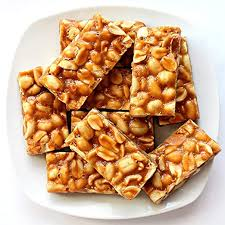

Coconut Chikki Recipe

Ingredients
- 1 tablespoon ghee
- 1 quart grated dried coconut
- ¾ cup brown sugar
- ¾ cup white sugar
- ¼ cup water, or as needed
Directions
- Melt 1 tablespoon of ghee in a pan over low heat; add coconut and roast until lightly browned, about 2 minutes. Set aside.
- In another skillet over medium heat, mix brown and white sugars. Add ¼ cup water, increase heat, and bring to a boil for about 3 minutes, stirring constantly.
- Lower heat and continue stirring until the mixture starts to thicken, about 2 minutes.
- Add the roasted coconut to the sugar mixture and combine well.
- Transfer the mixture to a greased sheet pan or baking dish and spread it evenly.
- Cut into squares or rectangles while warm and allow it to cool completely.
- Serve and enjoy your coconut chikki!